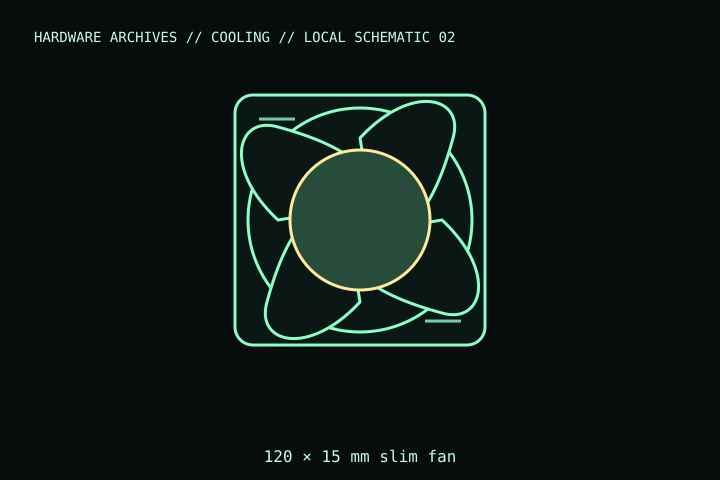

[ INDIVIDUAL COMPONENT // COOLING ]
Noctua NF-A12x15 PWM
A slim 120 mm fan with a 15 mm frame, for installations where a standard 25 mm fan does not fit. Cataloged as the 12 V NF-A12x15 PWM version; do not substitute the 5 V USB-powered FLX variant.

IDENTIFICATION: Match the complete model name, suffix, article number, bundle, revision, and host manual to the physical label before installation. Similar product names and variants may use different wiring or dimensions.
Specifications
| Catalog subcategory | Case and radiator fans |
|---|---|
| Exact model | NF-A12x15 PWM, 12 V version |
| Frame and thickness | 120 × 120 × 15 mm |
| Speed / control | Up to 1,850 rpm; 4-pin PWM |
| Electrical rating | 12 V DC; maximum input power 1.56 W; maximum current 0.13 A |
| Mount / host fit | 120 mm mounting pattern; slim frame needs suitable screws/clips and must not contact the radiator or nearby parts. |
Compatibility, installation & service
- Confirm the 120 mm hole pattern and that the mounting hardware is designed for a 15 mm fan; common 25 mm fan screws may be too long.
- Connect the 4-pin PWM lead to a compatible 12 V fan header/controller; do not connect it to a 5 V fan-only header.
- Check that a slim fan leaves adequate clearance to the case panel, filters, GPU, or radiator fittings.
Service notes
Disconnect power before cleaning. Prevent the rotor from overspinning when using compressed air; replace the fan if the thin frame, cable, or bearing is damaged.
Manufacturer references
- Noctua — NF-A12x15 PWMManufacturer specifications distinguish the 12 V PWM model from other NF-A12x15 variants.
- Noctua — Compatibility centreManufacturer support and compatibility reference.
Verify fit, wiring, and ratings against the manufacturer document for the exact unit and host. This catalog record is an identification aid, not a compatibility guarantee.